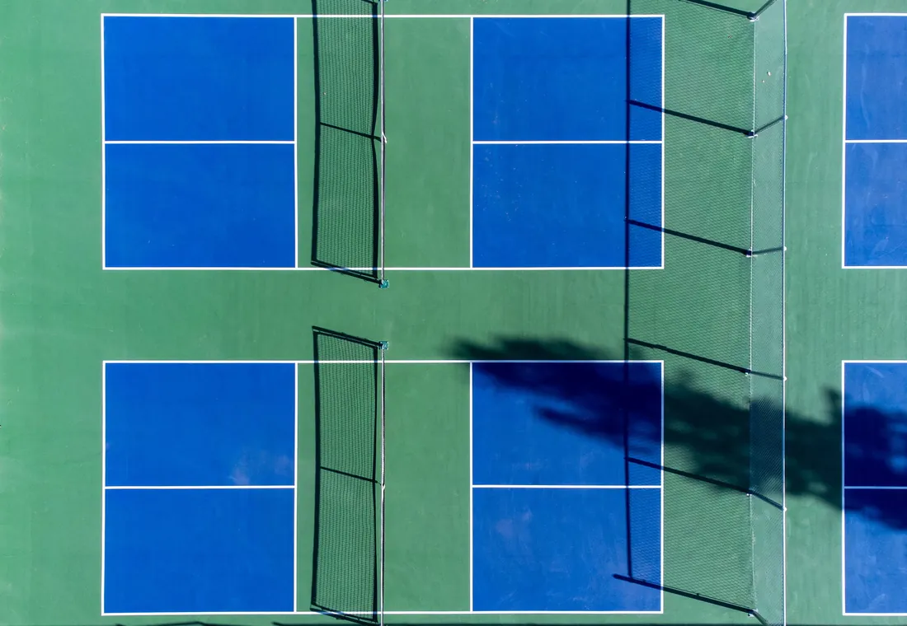

Buổi học đầu tiên không phải bài kiểm tra. Mục tiêu chính là để huấn luyện viên biết khả năng phối hợp, nền tảng thể thao, cách di chuyển và mức độ thoải mái của bạn khi cầm vợt. Chuẩn bị đúng giúp tiết kiệm thời gian, giảm nguy cơ đau mỏi và giúp phần đánh giá phản ánh đúng khả năng thật.
Nhiều người mua ngay vợt, giày và phụ kiện theo quảng cáo rồi mới phát hiện không phù hợp. Cách an toàn hơn là mang những thứ thiết yếu, thử dụng cụ trong buổi đầu và hỏi huấn luyện viên trước khi đầu tư thêm.
Checklist nhanh trước khi rời nhà
- Giày thể thao sạch, bám sân và không quá mòn.
- Trang phục co giãn, thấm hút và không cản bước chân.
- Nước uống, khăn nhỏ và đồ chống nắng nếu sân ngoài trời.
- Vợt cá nhân hoặc xác nhận nơi học có vợt cho mượn.
- Đến sớm 10–15 phút để thay đồ và khởi động.
- Thông báo chấn thương, đau cổ tay, đầu gối hoặc lưng trước buổi học.
- Chuẩn bị một mục tiêu cụ thể: biết luật cơ bản, giao bóng được hoặc sửa một lỗi.
1. Chọn giày quan trọng hơn chọn vợt đắt
Pickleball có nhiều chuyển động ngang, dừng nhanh và đổi hướng trong phạm vi ngắn. Giày chạy bộ thường tối ưu cho chuyển động tới trước, vì vậy phần thân có thể không giữ chân tốt khi bạn bước ngang. Trong buổi đầu, một đôi giày court, tennis hoặc giày thể thao có đế ổn định thường phù hợp hơn đôi giày đế cao và mềm.
Kiểm tra đế không quá mòn, dây buộc chắc và mũi giày còn khoảng trống vừa đủ. Nếu sân có quy định riêng về loại đế, hãy hỏi trước để tránh mang giày không được phép sử dụng.
2. Trang phục nên ưu tiên biên độ vận động
Bạn không cần mua bộ đồ chuyên Pickleball. Áo thể thao thoáng, quần short hoặc quần dài co giãn là đủ. Tránh quần quá rộng dễ vướng và trang phục giữ nhiệt nhiều nếu sân nóng. Với sân ngoài trời, nên chuẩn bị mũ, kem chống nắng và một áo khô để thay sau buổi tập.
| Nên mang | Chưa cần mua ngay |
|---|---|
| Giày bám sân, quần áo thể thao, nước và khăn. | Nhiều loại grip, túi vợt lớn hoặc phụ kiện đắt tiền. |
| Vợt cơ bản nếu bạn đã có sẵn. | Vợt cao cấp khi chưa biết trọng lượng và cán phù hợp. |
| Mũ và chống nắng nếu học ngoài trời. | Nhiều loại bóng khác nhau trước khi biết sân sử dụng loại nào. |
3. Có cần mua vợt trước buổi đầu không?
Không bắt buộc. Nếu nơi học có vợt dùng thử, bạn nên trải nghiệm vài trọng lượng và kích thước cán trước. Vợt quá nặng có thể làm cổ tay và vai mỏi sớm; cán quá lớn hoặc quá nhỏ khiến bạn siết tay nhiều hơn cần thiết.
Nếu đã có vợt, hãy mang theo để huấn luyện viên xem mức độ phù hợp. Nếu chưa có, hỏi trước về dụng cụ được cung cấp trong buổi học và chỉ quyết định mua sau khi hiểu cảm giác cầm, điểm ngọt và mức kiểm soát mình cần.
4. Ăn uống và khởi động thế nào?
Tránh ăn quá no ngay trước buổi tập. Một bữa nhẹ trước đó đủ thời gian, kết hợp uống nước đều, thường giúp cơ thể thoải mái hơn. Đừng đợi tới khi khát mới uống, đặc biệt khi học ngoài trời hoặc trong khung giờ nóng.
Khởi động nên bao gồm đi bộ nhanh hoặc chạy nhẹ, xoay khớp có kiểm soát và các bước chân ngang. Không nên vào sân rồi đánh mạnh ngay vì vai, cổ tay, hông và bắp chân chưa sẵn sàng cho chuyển động lặp lại.
5. Báo trước chấn thương và giới hạn vận động
Nếu từng đau vai, khuỷu tay, cổ tay, lưng hoặc đầu gối, hãy nói trước buổi học. Huấn luyện viên cần thông tin này để giảm cường độ, chọn bài tập và sửa tư thế phù hợp. Việc giấu đau để cố hoàn thành bài có thể làm đánh giá sai khả năng và khiến bạn bù trừ bằng động tác không tốt.
6. Chuẩn bị mục tiêu để buổi đánh giá có giá trị hơn
“Muốn chơi hay hơn” là mong muốn đúng nhưng quá rộng. Trước buổi đầu, hãy chọn một mục tiêu dễ diễn đạt: muốn biết cách cầm vợt, giao bóng hợp lệ, chơi được cùng bạn bè, giảm lỗi backhand hoặc chuẩn bị cho giải phong trào. Huấn luyện viên sẽ dùng mục tiêu đó để ưu tiên nội dung và đặt mốc phù hợp.
Nếu chưa biết mình cần gì, hãy nói rõ kinh nghiệm thể thao trước đây, số lần đã chơi và tình huống khiến bạn khó chịu nhất trên sân. Đây là dữ liệu đủ để bắt đầu đánh giá.
7. Buổi học đầu tiên thường diễn ra thế nào?
- Trao đổi mục tiêu, lịch tập và tiền sử chấn thương.
- Khởi động và quan sát khả năng di chuyển cơ bản.
- Kiểm tra grip, tư thế sẵn sàng và điểm chạm bóng.
- Thử một số kỹ thuật nền như giao bóng, forehand và backhand.
- Xác định các lỗi ảnh hưởng lớn nhất.
- Thực hiện bài tập sửa lỗi ngắn để xem tốc độ tiếp thu.
- Thống nhất bài tự luyện và lộ trình cho buổi tiếp theo.
Quy trình có thể thay đổi theo trình độ và thể lực. Người mới hoàn toàn sẽ dành nhiều thời gian cho nền tảng; người đã chơi có thể vào tình huống thực chiến sớm hơn.
Những kỳ vọng nên tránh trong buổi đầu
- Phải thực hiện đúng mọi kỹ thuật ngay sau một lần hướng dẫn.
- Đánh mạnh là dấu hiệu tiến bộ nhanh.
- Mua vợt đắt sẽ tự động giảm lỗi.
- Đau nhiều sau buổi tập mới chứng tỏ buổi học hiệu quả.
- Học một buổi là đủ để hình thành kỹ thuật ổn định.
Sau buổi đầu nên làm gì?
Ghi lại hai hoặc ba điểm chính thay vì cố nhớ toàn bộ. Nếu có video recap, hãy xem lại đoạn huấn luyện viên chỉ ra lỗi và đoạn bạn thực hiện đúng hơn. Tự tập ngắn, đúng bài sẽ có ích hơn đánh tự do nhiều giờ rồi quay lại thói quen cũ.
Để ước lượng lộ trình tiếp theo, bạn có thể đọc bài học Pickleball bao nhiêu buổi thì chơi được. Trước khi chọn người dạy, xem thêm cách chọn huấn luyện viên Pickleball 1 kèm 1.
Chuẩn bị buổi đánh giá đầu vào
Gửi kinh nghiệm hiện tại, mục tiêu và khung giờ mong muốn. 5P sẽ xác nhận sân, dụng cụ cần mang và nội dung buổi đầu trước khi bạn đến.
Đăng ký buổi đầu